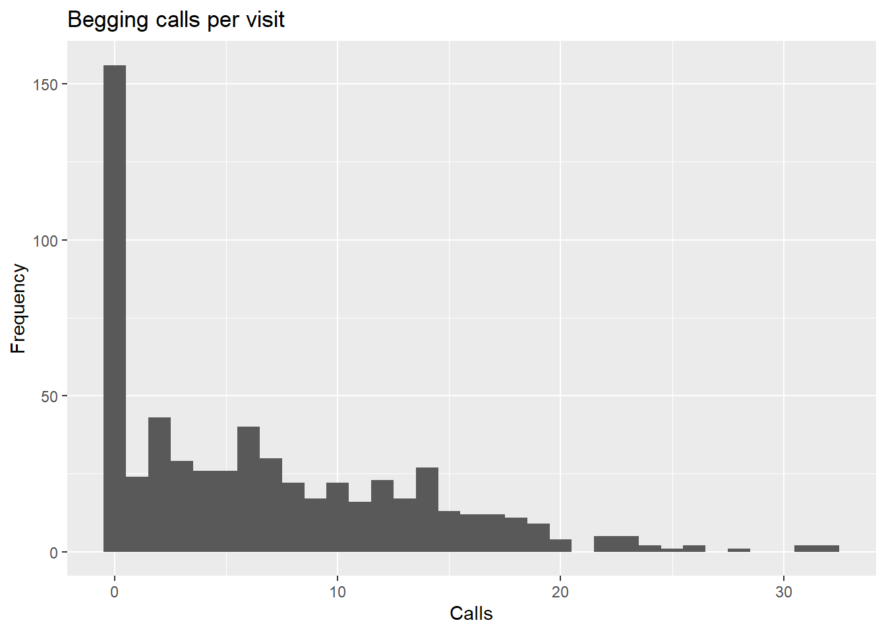
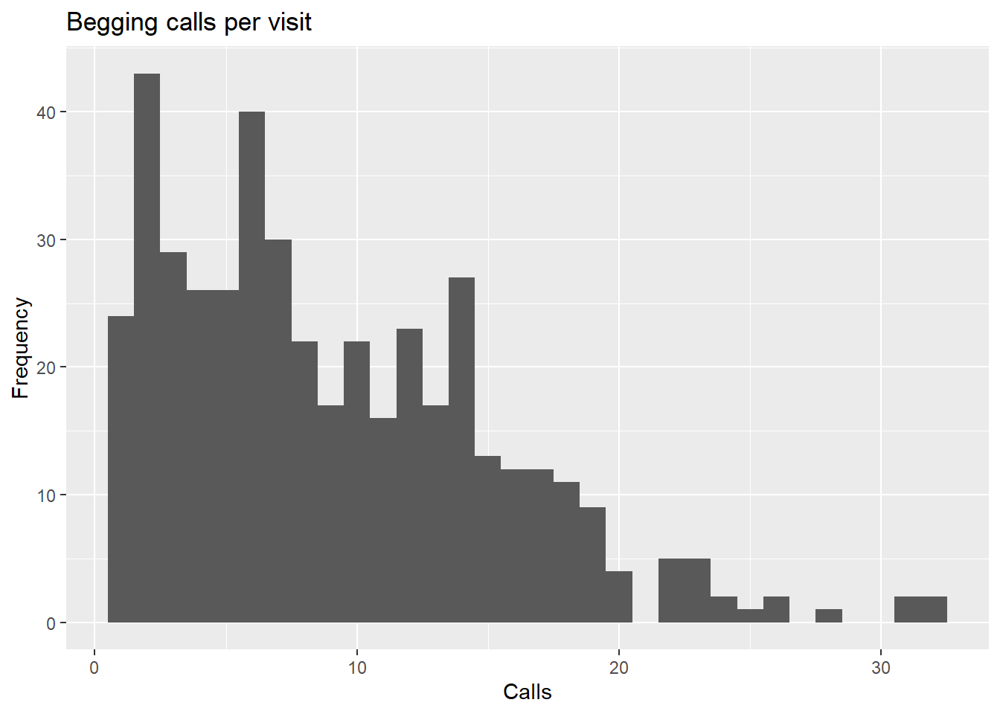
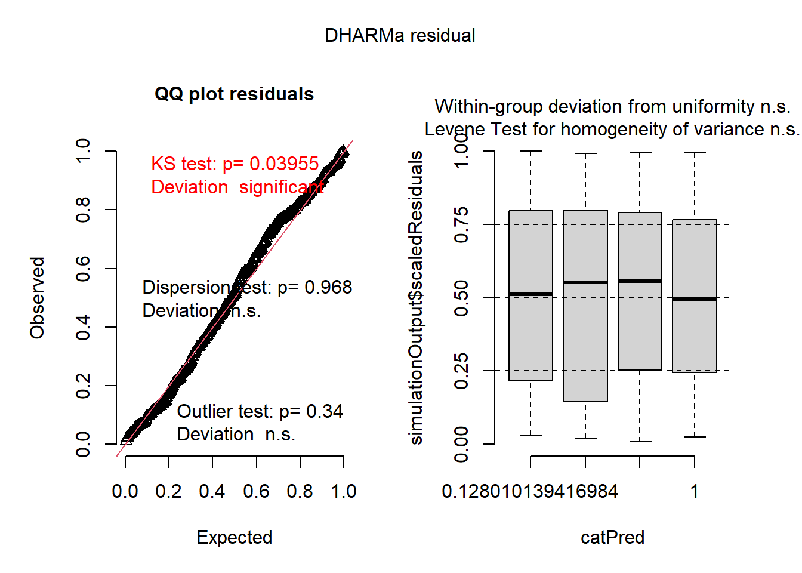
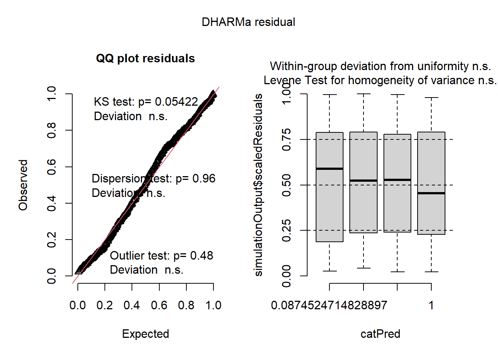
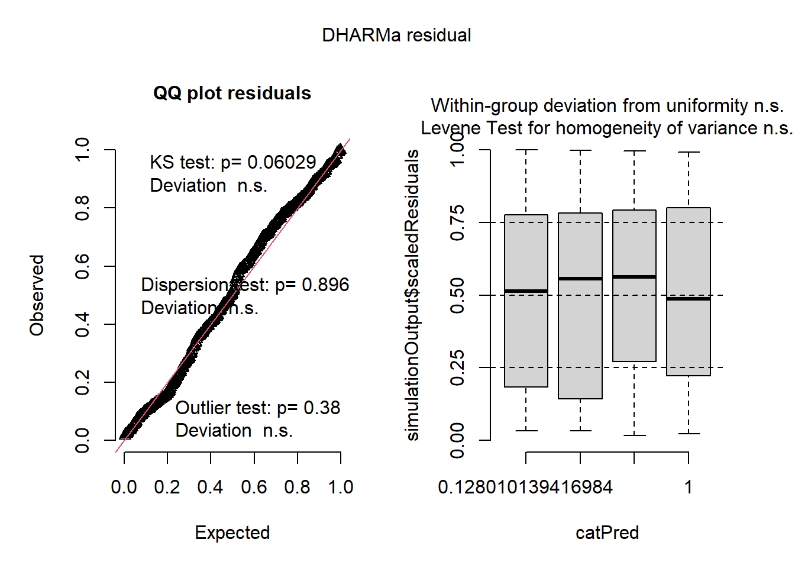
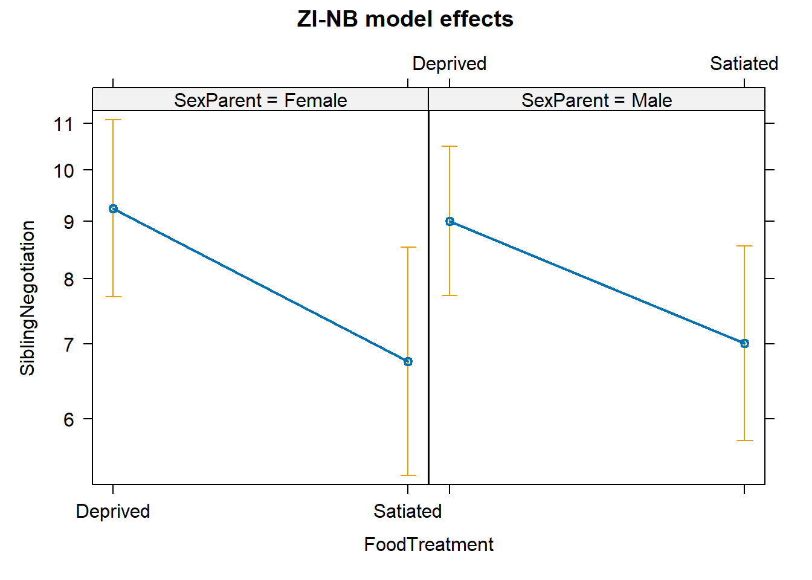

click here for the R code for this lecture
Today we will be discussing when, why, and how to use Multi-level (mixed effects) models in R with the packages ‘lme4’ and ‘glmmTMB’.
These are frequentist tools for extensions of simple linear regression.
where y is our response variable, x is our predictor variable, b0 is our intercept term, b1 is our slope term, and we have some error term epsilon. \[y = \beta_0 + \beta_1*x_1 + \epsilon\] We can also include multiple predictor variables. \[y = \beta_0 + \beta_1*x_1 + \beta_2*x_2+ ...+\beta_n*x_n +\epsilon\] And include interaction terms between multiple predictors. \[y = \beta_0 + \beta_1*x_1 + \beta_2*x_2+ \beta_3*(x_1*x_2) +\epsilon\] We will continue to build off this formula.
#install.packages("lme4")
#install.packages("glmmTMB")
#install.packages("ggplot2")
#install.packages("broom.mixed")
#install.packages("performance")
#install.packages("DHARMa")
#install.packages("effects")This is some data on juvenile owl begging calls that is included in the glmmTMB package.
library(glmmTMB)
data("Owls")
head(Owls)## Nest FoodTreatment SexParent ArrivalTime SiblingNegotiation BroodSize
## 1 AutavauxTV Deprived Male 22.25 4 5
## 2 AutavauxTV Satiated Male 22.38 0 5
## 3 AutavauxTV Deprived Male 22.53 2 5
## 4 AutavauxTV Deprived Male 22.56 2 5
## 5 AutavauxTV Deprived Male 22.61 2 5
## 6 AutavauxTV Deprived Male 22.65 2 5
## NegPerChick logBroodSize
## 1 0.8 1.609438
## 2 0.0 1.609438
## 3 0.4 1.609438
## 4 0.4 1.609438
## 5 0.4 1.609438
## 6 0.4 1.609438SiblingNegotiation will be our response variable, and FoodTreatment and SexParent are predictor variables. We could draft a simple model where \[SiblingNegotiation = \beta_0 + \beta_1*(FoodTreatment) + \beta_2*(SexParent) + \epsilon\] Or include an interaction term between our predictors. \[SiblingNegotiation = \beta_0 + \beta_1*(FoodTreatment) + \beta_2*(SexParent) + \beta_3*(FoodTreatment*SexParent) + \epsilon\] But what about our nest variable?
That is where mixed effects models come in!!
Hierarchical models combine fixed effects with random effects. When you have data with some sort of grouping, repetition, or hierarchical structure (e.g., site, plot, nest, year, individual) with repeated measurements this is the right model for you.
Observations within the same group are not independent. In other words, differences in our response variable can be partially explained by group identity. Mixed models explicitly account for that by allowing each group (nest, plot, etc.) to have its own random intercept or slope.
In this case, nest is our grouping factor with repeated measurements or visits to the same owl nest. So, we will treat nest as a random effect in our multi-level mixed effects models.
library(ggplot2)
ggplot(Owls, aes(SiblingNegotiation)) +
geom_histogram(binwidth = 1) +
labs(title = "Begging calls per visit", x = "Calls", y = "Frequency")
Already, it is clear that we are not dealing with a normally distributed response variable (this is common!). For the purpose of this demo, we will subset out the zeros (don’t worry we will come back to them).
owldata <- subset(Owls, SiblingNegotiation > 0) # remove zeros
summary(owldata$SiblingNegotiation) # double check distribution## Min. 1st Qu. Median Mean 3rd Qu. Max.
## 1.000 4.000 8.000 9.086 13.000 32.000ggplot(owldata, aes(SiblingNegotiation)) +
geom_histogram(binwidth = 1) +
labs(title = "Begging calls per visit", x = "Calls", y = "Frequency")
The data is still not normally distributed. It is right skewed, which is pretty typical when you are looking at count data from discrete events (like bird calls).
That this is count data narrows things down to a couple potential distributions: Poisson or negative binomial.
A Poisson distribution has mean equal to variance . \[E[Y] = \lambda, Var[Y] = \lambda\] Whereas a negative binomial distribution has an additional dispersion parameter such that variance can be greater than the mean. \[E[Y] = \mu, Var[Y] = \mu + (\mu^2/\theta)\] Let’s check how the variance in our data compares to the mean.
var(owldata$SiblingNegotiation) # Var(Y)## [1] 38.65778mean(owldata$SiblingNegotiation) # E(Y)## [1] 9.085779Clearly the observed variability is much greater than the expected. In this case, we can use a mixed-effects model with a negative binomial distribution to fit our data! The negative binomial introduces an extra dispersion parameter that allows variance to grow faster than the mean.
\[SiblingNegotiation = \beta_0 + \beta_1*(FoodTreatment) + \beta_2*(SexParent) + \beta_3*(FoodTreatment*SexParent) + \epsilon_{Nest} + \epsilon\] \[ \text{SiblingNegotiation} \sim \text{NegBinomial}(\mu, \theta) \]
library(lme4)## Loading required package: Matrixowls_lme4_nb <- glmer.nb(
SiblingNegotiation ~ FoodTreatment * SexParent # This is shorthand for each predictor and the interaction between both
+ (1|Nest), # This is the syntax for including Nest as a random effect
data = owldata
)
summary(owls_lme4_nb)## Generalized linear mixed model fit by maximum likelihood (Laplace
## Approximation) [glmerMod]
## Family: Negative Binomial(2.9031) ( log )
## Formula: SiblingNegotiation ~ FoodTreatment * SexParent + (1 | Nest)
## Data: owldata
##
## AIC BIC logLik -2*log(L) df.resid
## 2763.2 2787.7 -1375.6 2751.2 437
##
## Scaled residuals:
## Min 1Q Median 3Q Max
## -1.3622 -0.7957 -0.1403 0.6086 3.9389
##
## Random effects:
## Groups Name Variance Std.Dev.
## Nest (Intercept) 0.03408 0.1846
## Number of obs: 443, groups: Nest, 27
##
## Fixed effects:
## Estimate Std. Error z value Pr(>|z|)
## (Intercept) 2.227067 0.080504 27.664 <2e-16 ***
## FoodTreatmentSatiated -0.179661 0.116361 -1.544 0.123
## SexParentMale -0.011525 0.092161 -0.125 0.900
## FoodTreatmentSatiated:SexParentMale 0.008791 0.143165 0.061 0.951
## ---
## Signif. codes: 0 '***' 0.001 '**' 0.01 '*' 0.05 '.' 0.1 ' ' 1
##
## Correlation of Fixed Effects:
## (Intr) FdTrtS SxPrnM
## FdTrtmntStt -0.557
## SexParentMl -0.704 0.532
## FdTrtmS:SPM 0.441 -0.778 -0.632Note that glmer.nb() automatically uses a log link function
This model is rather uninformative, but is it misspecified? Let’s dive into some diagnostic tools to check.
library(DHARMa)## This is DHARMa 0.4.7. For overview type '?DHARMa'. For recent changes, type news(package = 'DHARMa')par(mfrow = c(2, 2))
res <- simulateResiduals(owls_lme4_nb, plot = FALSE)
plot(res)
So, the model is a good fit to the data (correctly specified), it’s just not very informative (our predictors don’t have “significant” effects). Maybe that’s because we removed a large portion of the data…
library(broom.mixed)
library(performance)tidy(owls_lme4_nb, effects = "fixed", conf.int = TRUE)## # A tibble: 4 × 8
## effect term estimate std.error statistic p.value conf.low conf.high
## <chr> <chr> <dbl> <dbl> <dbl> <dbl> <dbl> <dbl>
## 1 fixed (Intercept) 2.23 0.0805 27.7 1.88e-168 2.07 2.38
## 2 fixed FoodTreatmen… -0.180 0.116 -1.54 1.23e- 1 -0.408 0.0484
## 3 fixed SexParentMale -0.0115 0.0922 -0.125 9.00e- 1 -0.192 0.169
## 4 fixed FoodTreatmen… 0.00879 0.143 0.0614 9.51e- 1 -0.272 0.289r2_nakagawa(owls_lme4_nb)## # R2 for Mixed Models
##
## Conditional R2: 0.099
## Marginal R2: 0.017Remember that lme4 has different functions for different distributions:
However, glmmTMB is much more flexible (at the sacrifice of longer run times). glmmTMB has more options to specify distribution family (including 2 types of negative binomial distributions), and it has options to specify a zero-inflation model or dispersion model! It can even handle hurdle models, but we won’t steal Ryan and Catherine’s thunder…
First, let’s compare nbinom1 and nbinom2. Both handle overdispersion by including an additional dispersion parameter (compared to a Poisson distribution where mean = variance)
nbinom1 has the following variance formula: \[Var = \mu * (1+\alpha)\] And is useful for mild overdispersion.
nbinom2 has the following variance formula: \[Var = \mu + (\mu^2/\theta)\] And is useful for strong overdispersion.
library(glmmTMB)
owls_tmb_nb1 <- glmmTMB(
SiblingNegotiation ~ FoodTreatment * SexParent + (1|Nest),
data = owldata,
family = nbinom1()
)
summary(owls_tmb_nb1)## Family: nbinom1 ( log )
## Formula: SiblingNegotiation ~ FoodTreatment * SexParent + (1 | Nest)
## Data: owldata
##
## AIC BIC logLik -2*log(L) df.resid
## 2760.3 2784.9 -1374.2 2748.3 437
##
## Random effects:
##
## Conditional model:
## Groups Name Variance Std.Dev.
## Nest (Intercept) 0.02758 0.1661
## Number of obs: 443, groups: Nest, 27
##
## Dispersion parameter for nbinom1 family (): 3.1
##
## Conditional model:
## Estimate Std. Error z value Pr(>|z|)
## (Intercept) 2.25461 0.07534 29.924 <2e-16 ***
## FoodTreatmentSatiated -0.22612 0.11171 -2.024 0.0429 *
## SexParentMale -0.01843 0.08586 -0.215 0.8300
## FoodTreatmentSatiated:SexParentMale 0.03472 0.13719 0.253 0.8002
## ---
## Signif. codes: 0 '***' 0.001 '**' 0.01 '*' 0.05 '.' 0.1 ' ' 1owls_tmb_nb2 <- glmmTMB(
SiblingNegotiation ~ FoodTreatment * SexParent + (1|Nest),
data = owldata,
family = nbinom2()
)
summary(owls_tmb_nb2)## Family: nbinom2 ( log )
## Formula: SiblingNegotiation ~ FoodTreatment * SexParent + (1 | Nest)
## Data: owldata
##
## AIC BIC logLik -2*log(L) df.resid
## 2763.0 2787.6 -1375.5 2751.0 437
##
## Random effects:
##
## Conditional model:
## Groups Name Variance Std.Dev.
## Nest (Intercept) 0.03459 0.186
## Number of obs: 443, groups: Nest, 27
##
## Dispersion parameter for nbinom2 family (): 2.9
##
## Conditional model:
## Estimate Std. Error z value Pr(>|z|)
## (Intercept) 2.233082 0.080856 27.618 <2e-16 ***
## FoodTreatmentSatiated -0.180771 0.116696 -1.549 0.121
## SexParentMale -0.012153 0.092409 -0.132 0.895
## FoodTreatmentSatiated:SexParentMale 0.009574 0.143447 0.067 0.947
## ---
## Signif. codes: 0 '***' 0.001 '**' 0.01 '*' 0.05 '.' 0.1 ' ' 1res_tmb1 <- simulateResiduals(owls_tmb_nb1, plot = FALSE)
plot(res_tmb1)
res_tmb2 <- simulateResiduals(owls_tmb_nb2, plot = FALSE)
plot(res_tmb2)
tidy(owls_tmb_nb1, effects = "fixed", conf.int = TRUE)## # A tibble: 4 × 9
## effect component term estimate std.error statistic p.value conf.low
## <chr> <chr> <chr> <dbl> <dbl> <dbl> <dbl> <dbl>
## 1 fixed cond (Intercept) 2.25 0.0753 29.9 9.56e-197 2.11
## 2 fixed cond FoodTreatmen… -0.226 0.112 -2.02 4.29e- 2 -0.445
## 3 fixed cond SexParentMale -0.0184 0.0859 -0.215 8.30e- 1 -0.187
## 4 fixed cond FoodTreatmen… 0.0347 0.137 0.253 8.00e- 1 -0.234
## # ℹ 1 more variable: conf.high <dbl>tidy(owls_tmb_nb2, effects = "fixed", conf.int = TRUE)## # A tibble: 4 × 9
## effect component term estimate std.error statistic p.value conf.low
## <chr> <chr> <chr> <dbl> <dbl> <dbl> <dbl> <dbl>
## 1 fixed cond (Intercept) 2.23 0.0809 27.6 6.74e-168 2.07
## 2 fixed cond FoodTreatmen… -0.181 0.117 -1.55 1.21e- 1 -0.409
## 3 fixed cond SexParentMale -0.0122 0.0924 -0.132 8.95e- 1 -0.193
## 4 fixed cond FoodTreatmen… 0.00957 0.143 0.0667 9.47e- 1 -0.272
## # ℹ 1 more variable: conf.high <dbl>r2_nakagawa(owls_tmb_nb1)## # R2 for Mixed Models
##
## Conditional R2: 0.094
## Marginal R2: 0.025r2_nakagawa(owls_tmb_nb2)## # R2 for Mixed Models
##
## Conditional R2: 0.100
## Marginal R2: 0.017AIC(owls_lme4_nb, owls_tmb_nb1, owls_tmb_nb2)## df AIC
## owls_lme4_nb 6 2763.182
## owls_tmb_nb1 6 2760.309
## owls_tmb_nb2 6 2763.023r2_nakagawa(owls_lme4_nb)## # R2 for Mixed Models
##
## Conditional R2: 0.099
## Marginal R2: 0.017r2_nakagawa(owls_tmb_nb1)## # R2 for Mixed Models
##
## Conditional R2: 0.094
## Marginal R2: 0.025r2_nakagawa(owls_tmb_nb2)## # R2 for Mixed Models
##
## Conditional R2: 0.100
## Marginal R2: 0.017logLik(owls_lme4_nb)## 'log Lik.' -1375.591 (df=6)logLik(owls_tmb_nb1)## 'log Lik.' -1374.155 (df=6)logLik(owls_tmb_nb2)## 'log Lik.' -1375.512 (df=6)# Baseline NB (no ZI factor)
m_nb <- glmmTMB(SiblingNegotiation ~ FoodTreatment * SexParent + (1|Nest),
data = Owls, family = nbinom2())
# Zero-inflated NB: a ZI component (~ 1) adds extra zeros
m_zinb <- glmmTMB(SiblingNegotiation ~ FoodTreatment * SexParent + (1|Nest),
ziformula = ~ 1,
data = Owls, family = nbinom2())
# Hurdle NB: zero vs positive modeled separately
m_hurd <- glmmTMB(SiblingNegotiation ~ FoodTreatment * SexParent + (1|Nest),
ziformula = ~ 1, # hurdle uses 'truncated_nbinom2' for count
data = Owls,
family = truncated_nbinom2())AIC(m_nb, m_zinb, m_hurd)## df AIC
## m_nb 6 3499.763
## m_zinb 7 3425.483
## m_hurd 7 3432.816summary(m_zinb)$coefficients## $cond
## Estimate Std. Error z value
## (Intercept) 2.22379780 0.09261448 24.0113406
## FoodTreatmentSatiated -0.31423249 0.13758345 -2.2839410
## SexParentMale -0.02595704 0.10247113 -0.2533108
## FoodTreatmentSatiated:SexParentMale 0.06321679 0.16152295 0.3913796
## Pr(>|z|)
## (Intercept) 2.117048e-127
## FoodTreatmentSatiated 2.237500e-02
## SexParentMale 8.000281e-01
## FoodTreatmentSatiated:SexParentMale 6.955167e-01
##
## $zi
## Estimate Std. Error z value Pr(>|z|)
## (Intercept) -1.209909 0.1128472 -10.72166 8.054478e-27
##
## $disp
## NULLlibrary(effects)## Loading required package: carData## lattice theme set by effectsTheme()
## See ?effectsTheme for details.pred_zinb <- allEffects(m_zinb)## Warning in Effect.glmmTMB(predictors, mod, vcov. = vcov., ...): overriding
## variance function for effects/dev.resids: computed variances may be incorrectplot(pred_zinb, main = "ZI-NB model effects")
The plot shows how the predictors influence the expected counts when calling actually happens (non-zero).